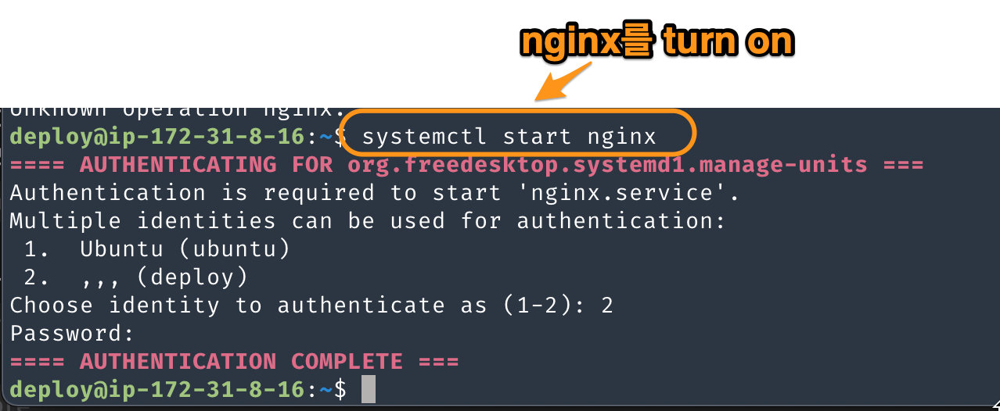
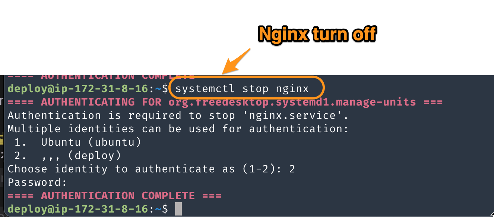
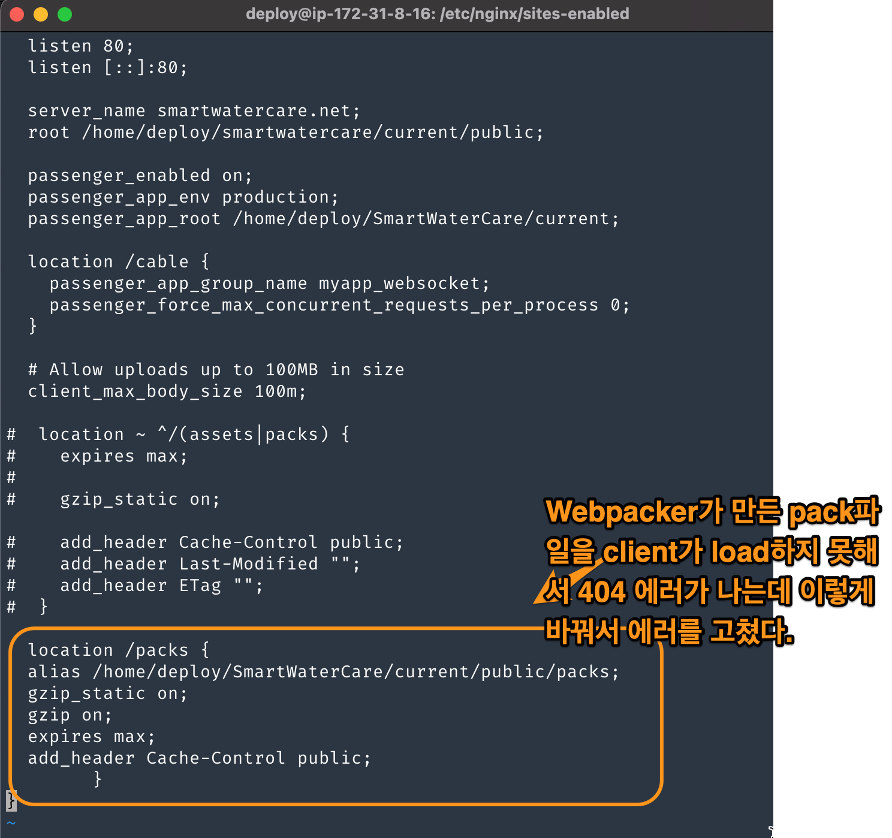

About Nginx
Table of Contents
1 Nginx에 관하여
Nginx의 역할은 web server의 역할이다. 사용자가 URL로 요청을 하면 처리하는 역할인데, 구체적으로 보면, static webpage를 return한다거나, image,js,css같은 asset을 return한다고 보면된다. 다른 역할도 많지만, static resource의 return이라는 점에 focus를 맞출 것이다. 요즘은 asset이 packing되어서 packs란 폴더에 있거나, assets란 폴더에 모아져 있고 entry file(js경우, compile할 목록들이 적힌 파일)을 제공하는 역할이다. 동적으로 page를 만드는 것은 WAS와 web app이 담당한다고 보면 된다. 참조:http://nginx.org/en/docs/beginners_guide.html
2 nginx turn on/off, reload
- nginx turn on/off에 사용하는 program.
- systemctl: nginx를 turn on/off, reload(configuration만 재설정)을 하는데 가장 많이 쓰인다. os에서 제공하는 system daemon을 control하는 program이다.
- nginx -s reload,stop: 이미 turn on된 nginx에 signal을 보낼 때 사용한다.
stop — fast shutdown (worker process가 하는일을 중단하고 종료한다.) quit — graceful shutdown (일을 하고 있는 worker process가 있다면 기다린다.) reload — reloading the configuration file reopen — reopening the log files
ex) nginx -s quit
- 주의사항
(nginx를 시작할 때, 시작하는 사용자를 물어본다. 왜냐면 끌때, 해당 사용자만 끌 수 있기 때문이다.) 즉, 시작과 종료하는 사용자가 같아야 한다.
- nginx turn on

Figure 1: nginx on
nginx turn off

3 Nginx 설정
3.1 nginx 설정 파일 위치
- nginx 설정 파일 위치: /usr/local/nginx/conf, /etc/nginx , or /usr/local/etc/nginx.
nginx폴더안에 nginx.conf와 site-enabled같은 폴더를 눈여겨 볼 필요가 있다. nginx.conf도 중요하지만, 실제 거의 건들지 않기 때문에 나중에 공부하고 우선은 site-enabled폴더에 있는 설정파일을 분석한다.
3.2 nginx 설정(site-enabled)
site-enabled에 있는 설정 파일이 최종적으로 수행되는 설정이라고 보면 된다. 보통은 다음과 같은 구조로 되어있다.
http{ server{ listen:80; server_name: smartwatercare.net; root /public;
location /cable { }
location / { }
location /pack { }
} }
해석을 하자면, client의 요청이 http이면, http block으로 들어온다. http면서, server라면(server의 domain name,port), server block으로 들어온다. 특정 resource라면 해당 location block으로 와서 처리한다.
기입해야 할 설정값
[server]
- port: port번호
- server_name: domain name or ip 주소
- root: webserver의 public 폴더는 static한 page가 저장되어 있거나, assets들이 보통 저장되어 있는 폴더다.
- passenger_enabled on : WAS가 module로 포함되어 있다면 동작시킬 수 있다. WAS는 webapp과 연동해서 같이 사용된다.
3.3 실제 예

Figure 3: nginx setting
4 nginx 로그
nginx의 log는 var/log/nginx안에 있다.